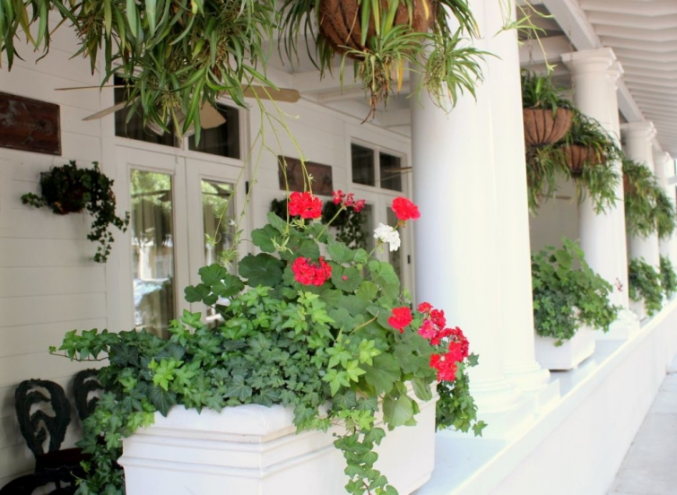
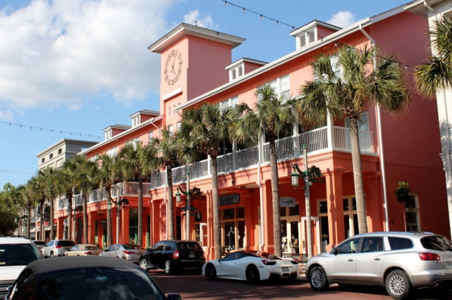
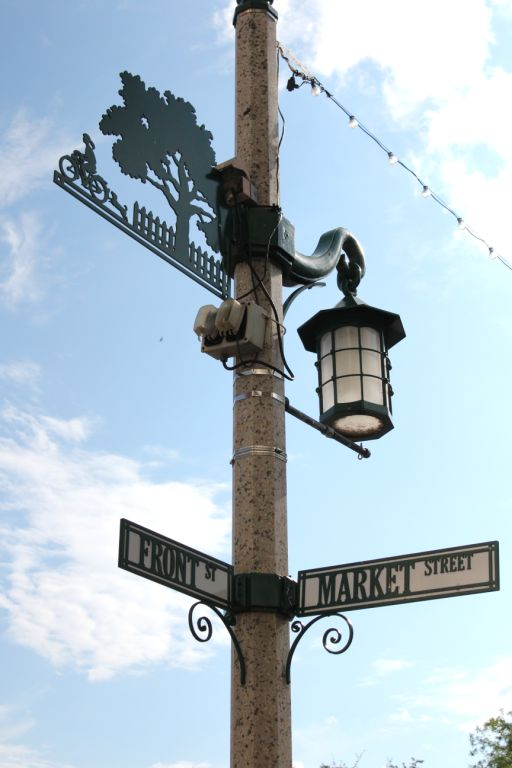

.png)
.PNG)
.PNG)
.PNG)
.PNG)
.PNG)
.JPG)
.JPG)
.PNG)
.PNG)


Walt Disney had a dream of a planned community –  a futuristic town – one he called EPCOT.  It was to be a model community that others would study.  Unfortunately, he did not live to see his dream town come to fruition.  Epcot became a theme park, and his planned community went in a different direction than one he had imagined (but I still think he would love this town. 🙂 )
Instead of a futuristic place, the planners of The Walt Disney Company enlisted the help of many notable architects including Michael Graves (who passed away just last month) and Robert A. M. Stern, and they looked backwards to the architectural details of old Southern towns. They wanted a sense of nostalgia – a place that would be all American – much like Main Street in the nearby Magic Kingdom.  Celebration became that place with the feel of a small Southern town from the 1930’s – a place in which Walt Disney himself might have wanted to grow up.

Just like in all things that Disney touches, details there were given great attention. Â Celebration’s logo of the little girl riding her bicycle is on everything from the town stationery to the lamp posts (above) even to the manhole covers. Â There is a town fountain, and when my daughter and I were standing beside it, I commented that it felt like we were in Savannah (one of the towns the architects looked to for details in the town plan.)

All the commercial buildings downtown have a stucco exterior painted in varying pastel shades – giving a sense of continuity to the appearance of the community. Â There is a school, a large health center, and a number of retail shops that we went in.
Unfortunately, the main one I had most wanted to see has closed – Downeast, a men’s and women’s clothing shop. (Or at least it was temporarily empty while we were there…the website still shows it as a retail business in Celebration.)
And the very nostalgic movie theater has also closed. Â How sad. Â I worry how all the retail establishments are making it there.
But…it appears that if the business is affiliated with anything food related, it is doing well. 🙂  Next door to the old theater is a Kilwins.  Oh my goodness at the heavenly scent that came from that place!
Fudge was being made while we were in the store.
Yum….
And more yumminess. 🙂
Down one of the streets was this interesting place named U Can Cook. Â We wandered by it after it had closed for the evening.
I believe it is a place for cooking classes and other special events. Here is a photo I found online from a Christmas gingerbread building workshop. Â Looked like fun!
Another food related place we enjoyed was the Sweet Escape Bakery.
My favorite memory of our entire trip to Celebration was sitting at one of those tables there outside Sweet Escape Bakery at night. Â My husband, our daughter, and I enjoyed coffee and a dessert and just sitting there chatting.
On our first night there, we had dinner at the Celebration Town Tavern. Â I had read some reviews that said it was the best place to dine. Â Their seafood is flown in from Boston (not sure why you would do that when you are in Florida – perhaps it was for the lobster.)
Our daughter had fish and chips. Â My husband has some kind of broiled fish. Â I had a bacon cheeseburger, and we all shared the very good strawberry shortcake.
We had breakfast one morning at Market Street Cafe.
The interior has the feel of an old diner.
They were very busy, and service was slow, but the food was delicious (especially my French toast with a brown sugar butter!)
I would have to say that our best meal was at Cafe D’Antonio – an Italian restaurant.
We went early for dinner that night – first customers in the door. 🙂
Our server brought bread and olive oil before the meal.  Our daughter wanted the calamari for an appetizer, so she and my husband shared that dish.From our daughter’s braised lamb shank to my husband’s veal piccata to my capellini d’ Angelo with those delicious sundried tomatoes – it was all good…very good. 🙂
And you know you just can’t eat at an Italian restaurant without trying their tiramisu, right? 🙂
Very yummy…and all very filling.  When you eat that much you need to work it off. So where do you go for that?  In Celebration, you can play in the water fountain down the street afterwards. 🙂
Or take a walk on their walking trail.
We took a walk on that trail while we were there, and I’ll show you what we saw on it the next time we get together here. Â Will you be enjoying a nice meal out somewhere or perhaps a walk on a trail this weekend?
We’d love to know what you have planned.
Whatever it is, I hope you have a lovely time. 🙂


.PNG)
Those food pictures made me gain 5 lbs! I really want to visit Celebration now!
Celebration looks cute!
Our first night at Disney we were at Raglan Road and the server told us that cod was flown in from Boston that morning. We told him so did we! LOL I did order the cod and it was great!
What a great getaway. I would love to have walking trails like those near me!
WOW, made me want to take my family! Gardening this weekend. Soaking up some sunshine.
Thanks for the tour os the town! I want to go there one day, maybe next winter. It all looks like a fun place.
Thanks for the tour. We haven’t been there in years but would like to visit again.
Thanks for the tour Kelly! Next year when we go to WDW, we’ll make sure to visit this area…and eat at some of those great restaurants! Keep these posts coming….I’m taking lots of notes! 😉
Kelly, immediately after reading your post I forwarded it to my friend, Pam, who is at her winter home in Pinellas Park. I hope she and her sister and BIL visiting from Nova Scotia will spend a day there to explore, walk on the trails and visit some of the restaurants you recommend. Thank you!
———————————————————————–
Great! I hope they get to explore Celebration too…especially the Italian restaurant. 🙂 There is also a Spanish restaurant there that is supposed to be quite good. I hate that we ran out of meals to get to eat there….hopefully we will get to try it on another visit to the town.
Kelly
Kelly,
I always enjoy taking e-trips with you. I would have enjoyed all of the exploring and eating you guys did. I can’t wait to see the trail walk you guys took. Have a great weekend. I am off to walk my boxer.
——————————————————————–
Wish we could have taken you along with us Dawn! The town was fun to explore, and my goodness at all the good food we ate! Have a great weekend.:)
Kelly
I adore Celebration and have always been fascinated with the city planning that went into the overall concept. There’s always a “Truman Show” feeling to it, a little too planned, if you know what I mean, but I think as it ages, that goes away.
Can’t wait to see your photos of the houses. We were able to tour a Southern Living home there years ago . . . fabulous!
———————————————————————
I do know what you mean about the Truman Show feeling. There were many people who said it was very Stepford Wives-ish when it was first being developed. I think any planned community is going to have that sense of “control” which is what makes you think that, but it is also that very same planning that makes people want to live there as well. Clean town, well kept yards, architectural control. And Celebration is quite a contrast to the sprawl that is all up and down I-4 at every exit around Disney. It is a nice contrast to all of it. I think you are right about the aging of the community…the grown trees probably help give it more of a “real town” atmosphere. How fun to see one of the Southern Living houses there! I would have loved that!!
Kelly
What a lovely place Celebration is. I’d love to visit there, or even live there! Leave it to Disney to attend to every detail. Thank you for sharing this wonderful area.
Have a wonderful weekend!
Karen
———————————————————————-
Disney certainly knows how to pay attention to every little detail for sure. You would probably love the place Karen – especially since you worked for Disney years ago. Hope your weekend is a good one too.
Kelly
Hi Kelly
I always enjoy all your posts and these of Celebration are like a mini-vacation for me–thank you, ’cause it’ll be awhile before I can get away for a few days.
You asked about this weekend–I did errands this a.m. and now yard work this afternoon and probably tomorrow too–and that’s good but oh! to travel…. :-))
————————————————————————
I am happy to “take you along” on our trips. 🙂 It sounds like you are having a very productive weekend! I would like to work out in our yard, but the pollen here is still so bad, I don’t want to take a chance on my allergies going bonkers. So I will stay inside for a week or so longer. Hopefully the pollen will be about through by then.
Kelly
Wow. So that is another place to put on my “Want to Visit” list. It looks absolutely delightful, and I am in (jealous) awe that some people actually get to *live* there. Wow. Just wow.
———————————————————————
Yes, put it on your list Frances. 🙂 Come on over to visit, and then find you a cute home there. (Quite an assortment is available!)
Kelly
So enjoyed your photos of Celebration! We went there years ago when it was fairly new and were very tempted to purchase our retirement home there, but bought in SC instead. We loved the planned community and charm. So sorry to hear the little theatre has closed.
——————————————————————–
Well I am glad you did Carolyn! The place does tempt you into wanting to live there. I thought it was so sad that the big beautiful theater could not stay in business. I wish they could find a creative use for the building.
Kelly
Celebration looks like a fun place to visit and eat! Are you going to show us some of the homes? It looks like the weather was perfect. This weekend I am working on my tablescape for the annual teacher scholarship fundraiser which is this week. (Your post made me very hungry.)
——————————————————————–
It IS a fun place to visit and eat. The houses are coming in the next post. 🙂 Is this the fundraiser where you do the themed table with a group of friends? If so, I would love to see how yours turns out this year! Good luck on your weekend project.
Kelly
I love weekend traveling trips with you!! You find the best places to explore! And the food looks divine! The area around WDWORLD has so much to offer– even to year round residents. It has been the best move for our family when our girls were young. They thank us all the time for bringing them to FL. We hope you will come and visit many more times!!
———————————————————————-
We had driven through there years ago, but this was the first time we had stayed there and had the opportunity to really explore it. It was such a nice change from all the excitement of Orlando. Yes, the food was excellent! (too excellent!) We will certainly be back. 🙂
Kelly